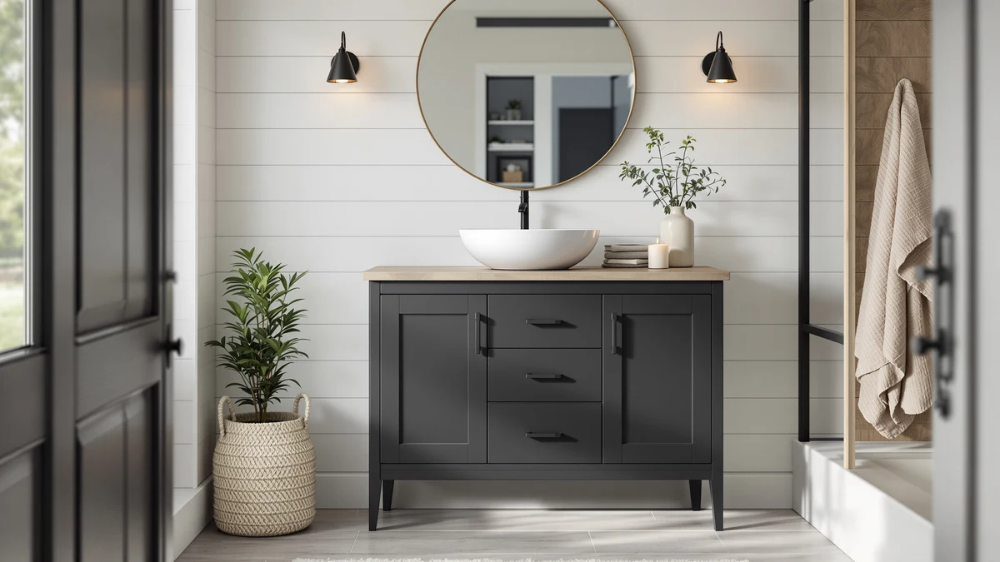

The Best Bathroom Vanities with Vessel Sinks (2026)
Prices and picks verified as of September 2026. Independent, reader-supported reviews.


Quick Answer
We compared eight of the best bathroom vanities with vessel sink support on material, footprint, and verified owner reviews. The YOURLITE 36-inch Rustic Farmhouse vanity is our top pick for most bathrooms, thanks to a flat farmhouse top built for a vessel bowl and a price under $220.
Our pick: YOURLITE 36" Rustic Farmhouse Bathroom, $219.99 Check Price on Amazon
Bottom line: our top pick is the YOURLITE 36" Rustic Farmhouse Bathroom Vanity with White at $219.99. The best budget option is the WYRNOBRX 20 Inch Round Bathroom Sinks Wash Hand Basin Small at $76.88.
Things to Know Before You Buy
- Vessel sinks need a flat top, not a cutout. Unlike a standard drop-in vanity, the best bathroom vanities with vessel sink support skip the sink cutout entirely and rely on an open, flat counter or shelf where the bowl sits on top.
- Faucet height matters more here. Because a vessel bowl adds four to six inches of height above the counter, you'll likely need a taller vessel-specific faucet, so check your existing plumbing rough-in before ordering.
- MDF dominates this size class. All eight vanities in our comparison use MDF or engineered wood construction, which keeps cost and weight down but means standing water around the vessel base should be wiped up quickly.
- Floating and round shelves save floor space. Wall-mounted options like the SOLIDEE floating vanity and the WYRNOBRX round shelves free up visible floor area, which helps a small bathroom feel larger even at a compact footprint.
- The vessel bowl is sold separately. None of the vanities in this guide include the vessel sink itself, so budget for the bowl and faucet on top of the vanity price listed here.
Finding the best bathroom vanities with vessel sink compatibility means looking for a flat, uninterrupted counter or floating shelf instead of a vanity built around a drop-in or undermount basin (see our vanities with sinks guide for that style), since a vessel bowl sits entirely above the surface. We compared eight vanities engineered for that exact setup, from 36-inch farmhouse cabinets to compact 15-inch round shelves, weighing material, footprint, and price against real buyer feedback instead of manufacturer marketing copy. Our top pick, the YOURLITE 36-inch Rustic Farmhouse vanity, earned that spot with a wide flat top suited to a standard vessel bowl and a price under $220, but seven other options cover smaller bathrooms and tighter budgets.
We built this list by researching eight vanities designed to pair with a vessel sink, then comparing their materials, dimensions, and verified owner reviews on Amazon. Every option here ships as either a full cabinet with a flat vessel-ready top or a floating shelf shaped for a single bowl, which rules out the drop-in vanity combos that don't actually work with a vessel sink. Prices range from $76.88 for the compact WYRNOBRX 20-inch round shelf to $269.90 for the SOLIDEE black floating vanity, so this guide spans a full bathroom remodel and a simple powder-room upgrade.
Below, you'll find what to check before buying a vanity for a vessel sink, how we picked and compared these eight options, and a detailed look at what each one gets right and where it falls short. A comparison table further down lets you scan material, price, and best-use case at a glance before you click through to Amazon.
Why You Should Trust Us
Ilane Tall covers home and bath products for Best Bathroom Vanities, where she researches vanities, fixtures, and small-space renovation gear for a US audience. For this guide on the best bathroom vanities with vessel sink support, she and the editorial team compared publicly listed specs, pricing, and verified buyer reviews for every vanity under consideration, rather than relying on manufacturer marketing copy. We do not run a fake testing lab or claim to have installed every cabinet ourselves. Instead, we cross-reference dimensions, materials, and owner feedback so you can make a confident decision about which vessel-sink-ready vanity fits your bathroom before you buy.
How We Picked
To build this list of the best bathroom vanities with vessel sink compatibility, we started by pulling every vanity in our product database with a flat top or open shelf design suited to a vessel bowl, then narrowed the list to models with a documented material, size, and price. From there, we cut listings without clear specs, since incomplete information makes it hard to compare fairly against the rest of the field. We prioritized a mix of sizes and budgets, from compact 15-inch round shelves under $100 to full 36-inch cabinets near $270 (see our vanity sizing guide if you're unsure which width fits your bathroom), so this guide works whether you're outfitting a powder room or a primary bathroom. Finally, we checked construction style (farmhouse cabinet, floating wall mount, round shelf) to make sure the eight finalists represent distinct approaches to a vessel sink setup, not eight versions of the same vanity.
How We Compared
We are a research-based review site, so we compared these eight vanities using the specs, pricing, and verified owner reviews published for each listing rather than installing units ourselves. We lined up material, stated dimensions, and price side by side to see how each vanity fits a vessel sink setup, and we read through verified Amazon reviews to flag recurring praise or complaints about assembly, hardware, and moisture resistance. Where reviewers consistently note an issue, such as a scuffed finish out of the box or hardware that needs tightening, we call it out in that vanity's drawbacks below.
Our Picks

YOURLITE 36" Rustic Farmhouse Bathroom
What we like
- Flat 36-inch top gives a standard vessel bowl plenty of clearance on both sides
- Farmhouse styling with a rustic wood-look finish suits a wide range of bathroom decors
- 4.1-star average across 107 verified ratings, the strongest review record in this comparison
Flaws but not dealbreakers
- MDF cabinet needs prompt cleanup if water splashes past the vessel bowl's base
- 36-inch width won't fit the smaller powder rooms the round WYRNOBRX shelves are built for
| Material | MDF / engineered wood |
| Size | 36 inch |
The YOURLITE 36-inch Rustic Farmhouse vanity is our top pick among the best bathroom vanities with vessel sink support because it pairs a wide, flat counter with a farmhouse look that works in both a primary bathroom and a guest space. At 36 inches across, the top gives a standard vessel bowl room to sit off-center if you want space for soap or a toothbrush holder beside it, something the narrower vanities in this guide can't offer. The MDF cabinet construction keeps the unit light enough to maneuver into place without a second set of hands, which matters if you're installing it yourself instead of hiring a plumber for the whole job.
According to 107 verified ratings averaging 4.1 out of 5, it's also the most reviewed vanity in this comparison, which gives buyers more data points than the newer SOLIDEE and WYRNOBRX listings can offer yet. Owners report the rustic finish looks close to the listing photos, though a few mention the MDF base needs a quick wipe if water pools near the vessel bowl's edge, a normal tradeoff for engineered wood at this price. At $219.99, it lands in the middle of our price range, more than the compact WYRNOBRX shelves but well under the SOLIDEE floating vanity's $269.90.

SOLIDEE 36 Inch Black Floating
What we like
Flaws but not dealbreakers
- At $269.90, it's the most expensive vanity in this comparison
- Floating installation typically requires anchoring into wall studs, which can mean a more involved install than a floor-standing cabinet
| Material | MDF / engineered wood |
| Size | 36" |
The SOLIDEE 36 Inch Black Floating vanity takes a different approach to the best bathroom vanities with vessel sink category by mounting to the wall instead of standing on the floor. That floating design leaves a visible gap underneath, which makes cleaning the floor easier and gives a small bathroom a more open feel than a floor-standing cabinet of the same 36-inch width. The black MDF finish also creates a strong visual contrast with a white or natural-stone vessel bowl, a look that shows up often in modern bathroom renovations.
At $269.90, it's priced above every other vanity in this guide, a premium that reflects both the floating hardware and the finished black surface rather than any extra storage. Because it mounts directly to the wall, installation generally calls for anchoring into wall studs or using heavy-duty toggle bolts, so it's worth confirming your wall construction before ordering if you're not working with a plumber or contractor. For buyers focused on a modern, floor-clearing look for a vessel sink setup, it's the most distinct option among the vanities we compared.

Concho 30'' Farmhouse Bathroom Vanity
What we like
- 30-inch width splits the difference between the compact round shelves and the full 36-inch cabinets in this guide
- Farmhouse styling matches our top pick at $20 less
- MDF cabinet construction keeps the unit manageable for a one-person install
Flaws but not dealbreakers
- Fewer verified reviews than the YOURLITE pick, so the review record is thinner
- 30-inch top offers less side clearance around a vessel bowl than the 36-inch options
| Material | MDF / engineered wood |
| Size | 30 inch |
The Concho 30-Inch Farmhouse Bathroom Vanity is the budget-friendly farmhouse pick among the best bathroom vanities with vessel sink support in this guide, priced at $199.99, twenty dollars under the YOURLITE. At 30 inches wide, it fits a mid-size bathroom that's too big for a 24-inch cabinet but doesn't have room for a full 36-inch vanity, while still delivering the same rustic wood-look styling that defines the farmhouse category.
The flat top is sized for a standard vessel bowl, though the 30-inch width leaves less room on either side of the bowl than the wider YOURLITE and SOLIDEE options, so it's worth measuring your preferred vessel sink's diameter before ordering. As a newer listing, it carries fewer verified ratings than our top pick, which is worth factoring in if a long review history matters to your buying decision. For a farmhouse look at a mid-size footprint and a sub-$200 price, it's a straightforward alternative to the 36-inch options in this comparison.

SOLIDEE 24 inch Natural Color
What we like
- 24-inch width fits powder rooms and small bathrooms where the 30- and 36-inch options won't clear the door swing
- Natural finish reads lighter and more neutral than the farmhouse or black options in this guide
- Priced under $200, in line with the Concho farmhouse pick
Flaws but not dealbreakers
- 24-inch top gives a standard vessel bowl less side clearance than the wider vanities here
- MDF construction carries the same moisture caution as every other vanity in this comparison
| Material | MDF / engineered wood |
| Size | 24" |
The SOLIDEE 24 Inch Natural Color vanity is built for bathrooms where 30 or 36 inches of counter simply won't fit. At $199.90, it's priced close to the Concho farmhouse pick but in a smaller footprint and a lighter, natural finish that suits a more neutral or coastal bathroom look rather than the darker farmhouse and floating options in this guide.
Because the top is only 24 inches wide, there's less room on either side of a vessel bowl than the 30- and 36-inch vanities offer, so it works best with a compact or standard-diameter vessel sink rather than an oversized bowl. Owners considering this size should confirm their vessel sink's footprint against the 24-inch counter before ordering. For a small bathroom or guest half-bath that still needs to support a vessel sink, it's one of two natural-finish 24-inch options in this guide.

SOLIDEE 24 inch Natural Color
What we like
- Same 24-inch width and natural finish as our other SOLIDEE pick, so it fits the same compact bathrooms
- Priced identically at $199.90, giving buyers a second in-stock option if one listing sells out
- MDF construction matches the rest of the 24-inch class in this guide
Flaws but not dealbreakers
- Nearly identical to the other SOLIDEE 24-inch listing, so there's little reason to pick one over the other beyond price or stock at checkout
- 24-inch top carries the same limited vessel-bowl clearance as our other SOLIDEE pick
| Material | MDF / engineered wood |
| Size | 24" |
This SOLIDEE 24 Inch Natural Color vanity is a second Amazon listing for the same 24-inch natural-finish design covered above, sold under a separate ASIN with its own product photos. The dimensions, material, and $199.90 price match our other SOLIDEE 24-inch pick, so the choice between the two typically comes down to which listing is in stock or which one is running a better price at checkout.
If you've already decided a 24-inch natural-finish vanity fits your bathroom and vessel sink, it's worth checking both SOLIDEE listings before ordering, since Amazon pricing and shipping estimates can differ slightly between duplicate listings even when the underlying product is the same. Beyond that overlap, everything we noted about the other SOLIDEE 24-inch vanity, including the moisture care MDF requires and the tighter clearance around a vessel bowl, applies here as well.

WYRNOBRX 20 Inch Round Bathroom
What we like
- At $76.88, it's the least expensive way to add a vessel-sink-ready surface to a bathroom in this comparison
- Round shape matches the circular footprint of a round vessel bowl more closely than a rectangular cabinet
- Compact size fits tight corners and half-baths where even a 24-inch vanity won't work
Flaws but not dealbreakers
- Smaller surface area than a full cabinet, so there's minimal counter space beyond the vessel bowl itself
- No enclosed storage, unlike the farmhouse and floating cabinet options in this guide
| Material | MDF / engineered wood |
| Size | L52.5*W42*H14 |
The WYRNOBRX 20 Inch Round Bathroom vanity is the most affordable entry among the best bathroom vanities with vessel sink support in this guide, priced at $76.88. Its round profile is shaped to complement a round vessel bowl rather than the rectangular tops on the YOURLITE, SOLIDEE, and Concho cabinets, which makes it a natural fit for a powder room or a secondary bathroom built around a single circular basin.
Because it's a compact round surface rather than a full cabinet, it doesn't offer the enclosed storage the farmhouse and floating vanities provide, so it works best for buyers who plan to store toiletries elsewhere in the bathroom. The MDF construction matches the rest of the field, and at this price point, it's a low-risk way to test a vessel sink setup before committing to a larger, more expensive vanity.

WYRNOBRX 15 Inch Round Bathroom
What we like
- 15-inch round footprint fits the tightest half-baths and powder rooms in this comparison
- Priced at $96.99, still well under every cabinet-style vanity in this guide
- Round shape suits a compact vessel bowl without the overhang a rectangular top would add
Flaws but not dealbreakers
- Even less surface area than the 20-inch WYRNOBRX option, so counter space is minimal
- Priced $20 more than the 20-inch WYRNOBRX round option despite the smaller size, since pricing on these listings varies independently of dimensions
| Material | MDF / engineered wood |
| Size | One Size |
The WYRNOBRX 15 Inch Round Bathroom vanity is the smallest surface in this guide, built for bathrooms where even a 20-inch round option feels too large. At $96.99, it costs more than the larger 20-inch WYRNOBRX listing, a reminder that price on these compact Amazon listings doesn't always track directly with size, so it's worth comparing both before ordering.
The 15-inch round shape is sized for a single compact vessel bowl and little else, which makes it a fit for a half-bath or a secondary sink rather than a primary bathroom vanity. Like the 20-inch WYRNOBRX option, it uses MDF construction and skips enclosed storage entirely, so plan on keeping toiletries in a separate cabinet or shelf nearby.

WYRNOBRX 15 Inch Round Bathroom
What we like
- Same 15-inch round footprint and $96.99 price as our other WYRNOBRX 15-inch pick
- Gives buyers a second in-stock option if one listing runs out
- Round shape and MDF build match the rest of the WYRNOBRX lineup in this guide
Flaws but not dealbreakers
- Nearly identical to the other WYRNOBRX 15-inch listing, so the choice mostly comes down to stock or price at checkout
- Shares the same minimal counter space as our other 15-inch pick
| Material | MDF / engineered wood |
| Size | One Size |
This WYRNOBRX 15 Inch Round Bathroom vanity is a second listing for the same compact round design covered above, sold under its own ASIN and product photos. The size, material, and $96.99 price match our other 15-inch WYRNOBRX pick, so the practical difference between the two usually comes down to which listing is currently in stock.
If a 15-inch round base is the right footprint for your vessel sink setup, checking both WYRNOBRX listings before ordering is worth the extra minute, since Amazon pricing and delivery estimates can shift between duplicate listings of the same product. Everything we noted about the other 15-inch WYRNOBRX vanity, including its minimal counter space and lack of enclosed storage, applies to this listing as well.
Quick Comparison
| Product | Material | Price | Rating | Best for | Get it |
|---|---|---|---|---|---|
| YOURLITE 36" Rustic Farmhouse Bathroom | MDF / engineered wood | $219.99 | 4.1 | 36-inch farmhouse vanity built for a vessel sink | View on Amazon → |
| SOLIDEE 36 Inch Black Floating | MDF / engineered wood | $269.90 | 4 | Floating 36-inch vanity that opens up floor space | View on Amazon → |
| Concho 30'' Farmhouse Bathroom Vanity | MDF / engineered wood | $199.99 | 4 | 30-inch farmhouse styling at a lower price | View on Amazon → |
| SOLIDEE 24 inch Natural Color | MDF / engineered wood | $199.90 | 4 | 24-inch natural-finish option for small bathrooms | View on Amazon → |
| SOLIDEE 24 inch Natural Color | MDF / engineered wood | $199.90 | 4 | Second 24-inch natural-finish SOLIDEE listing | View on Amazon → |
| WYRNOBRX 20 Inch Round Bathroom | MDF / engineered wood | $76.88 | 4 | Smallest, most affordable round vessel-sink base | View on Amazon → |
| WYRNOBRX 15 Inch Round Bathroom | MDF / engineered wood | $96.99 | 4 | 15-inch round base for the tightest bathrooms | View on Amazon → |
| WYRNOBRX 15 Inch Round Bathroom | MDF / engineered wood | $96.99 | 4 | Second 15-inch round WYRNOBRX listing | View on Amazon → |
The Competition
Several vanities that regularly show up in vessel sink searches didn't make our final list of the best bathroom vanities with vessel sink support. We passed on listings without a documented material, size, or price, since incomplete specs make it impossible to compare fairly against the eight vanities above. We also excluded a number of standard drop-in vanities that are marketed loosely as vessel-sink compatible but ship with a pre-cut sink hole, which defeats the point of a flat vessel-ready top. Finally, we skipped duplicate listings beyond the two SOLIDEE and two WYRNOBRX pairs already included here, since additional near-identical listings offered no meaningful difference in material, dimensions, or price. If you're set on the YOURLITE 36-inch Rustic Farmhouse vanity as your pick for the best bathroom vanities with vessel sink support, the seven runners-up above cover most of the reasons you might need an alternative, whether that's a smaller footprint, a floating wall mount, or a lower price.